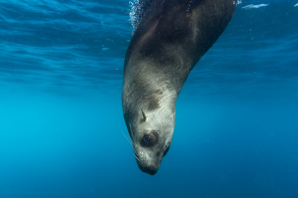

Focas: Os Acrobatas dos Oceanos
As focas são mamíferos marinhos fascinantes que habitam os mares frios e temperados do planeta. Com seu corpo adaptado para a vida aquática, elas são nadadoras ágeis e eficientes, encantando cientistas e amantes da natureza com seu comportamento social e habilidades surpreendentes.
Classificação e Tipos de Focas
As focas pertencem à família Phocidae, também conhecidas como focas verdadeiras. Elas se distinguem dos leões-marinhos e morsas por não possuírem orelhas externas visíveis e por se locomoverem de forma diferente em terra — arrastando-se com o corpo, em vez de usarem as nadadeiras dianteiras como apoio.
Existem cerca de 18 espécies de focas verdadeiras. Entre as mais conhecidas estão:

Adaptações ao Ambiente Marinho
O corpo das focas é perfeitamente moldado para a vida no mar. Sua forma hidrodinâmica, com membros anteriores e posteriores transformados em nadadeiras, permite que se desloquem com velocidade e graça debaixo d’água. A espessa camada de gordura — chamada de gordura subcutânea — ajuda na flutuação e na conservação de calor, essencial para a sobrevivência em ambientes gelados.
Elas também têm excelente capacidade pulmonar e um metabolismo adaptado para realizar longos mergulhos. Algumas espécies podem ficar submersas por mais de 30 minutos.
Alimentação e Predadores
Focas são carnívoras e se alimentam principalmente de peixes, lulas e crustáceos. Algumas, como a foca-leopardo, podem caçar até outras espécies de focas e pinguins.
Entre seus predadores naturais estão as orcas, tubarões e ursos polares (no Ártico). No entanto, uma ameaça ainda maior vem do ser humano— com a poluição dos oceanos, redes de pesca e mudanças climáticas afetando diretamente seus habitats e fontes de alimento.
[FOTO]Comportamento e Reprodução
Apesar de passarem a maior parte da vida no mar, as focas retornam à terra ou ao gelo para descansar, trocar a pelagem e se reproduzir. Durante a época de acasalamento, os machos geralmente competem entre si para dominar territórios e conquistar fêmeas.
As fêmeas dão à luz a um único filhote após uma gestação que pode durar até 11 meses. Os filhotes nascem com uma camada espessa de pelo branco, que os protege do frio até desenvolverem a gordura corporal.
[FOTO]Conservação
Muitas espécies de focas já estiveram ameaçadas pela caça comercial, especialmente no século XIX e XX, devido à valorização de suas peles e óleo. Hoje, embora a caça esteja proibida em grande parte do mundo, os desafios continuam com a degradação ambiental.
Organizações internacionais e cientistas trabalham na preservação dessas criaturas, promovendo áreas marinhas protegidas e combatendo a pesca predatória e a poluição.
As focas são muito mais do que apenas "bichos fofos". Elas são essenciais para o equilíbrio ecológico dos oceanos e têm muito a nos ensinar sobre adaptação, resistência e convivência com o ambiente. Preservá-las é um dever de todos que se importam com o futuro da vida marinha.